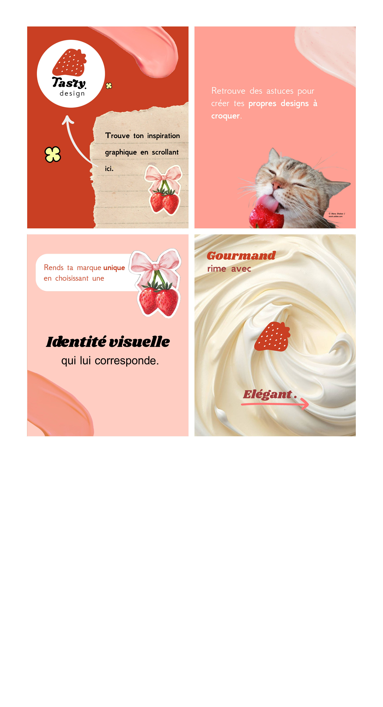
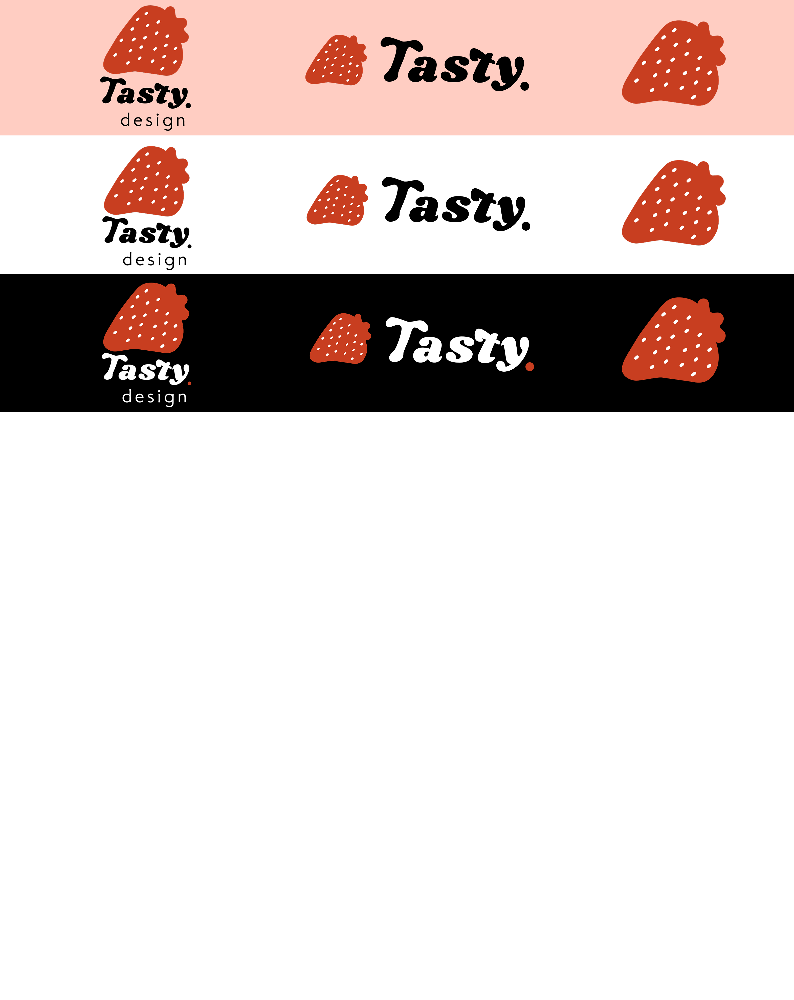

Visual identity for Tasty Design
I have created a visual identity for my future graphic design Instagram account, ‘Tasty Design’. To illustrate my journey into the world of graphic design, I will mainly be posting illustrations, logos, visual identities and website mock-ups for fictional brands. In addition, I will participate in design competitions for graphic designers' Instagram accounts, such as @designerbriefs or @studioyuna_. Each design transports its audience through different graphic universes.
Details of my tasks
- Defining the brand, its audience, positioning and voice
- Creating a mood board based on what inspired me about the brand
- Designing a logo consistent with the mood board and its variations
- Choosing colours, fonts and photographs
- Drafting rules for using the logo
- Applying the visual identity to the Instagram profile page.
What I gained from this project:
- Detailing the graphic charter and justifying my research,
and applying it to social media posts.
- Using Inkscape and Coolors.
- It made me want to continue my studies towards a master's degree in graphic design.



